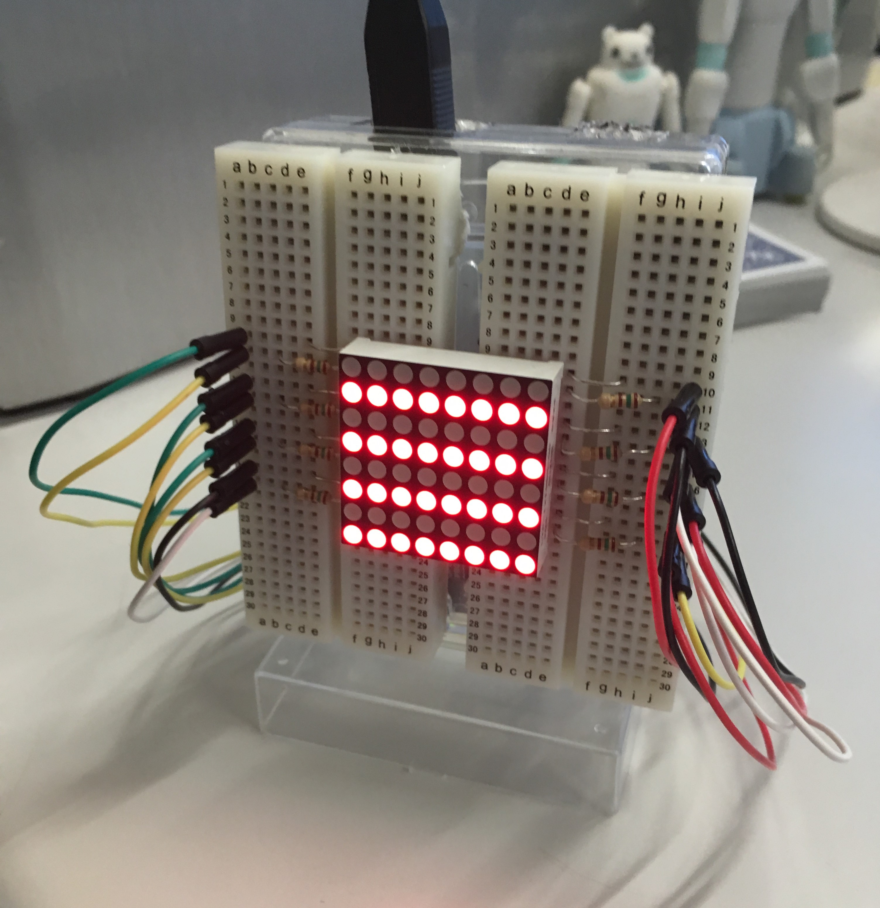
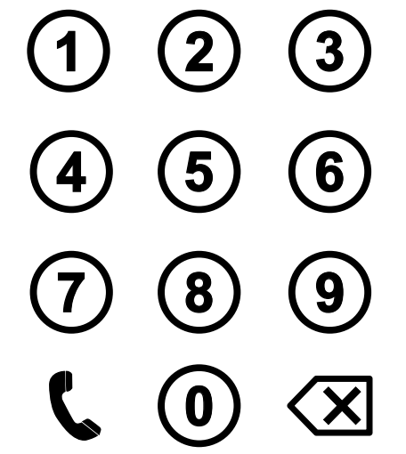
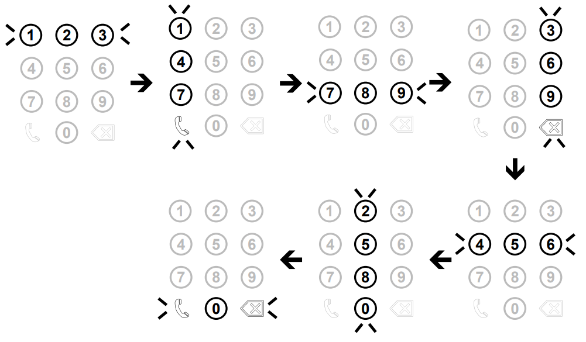
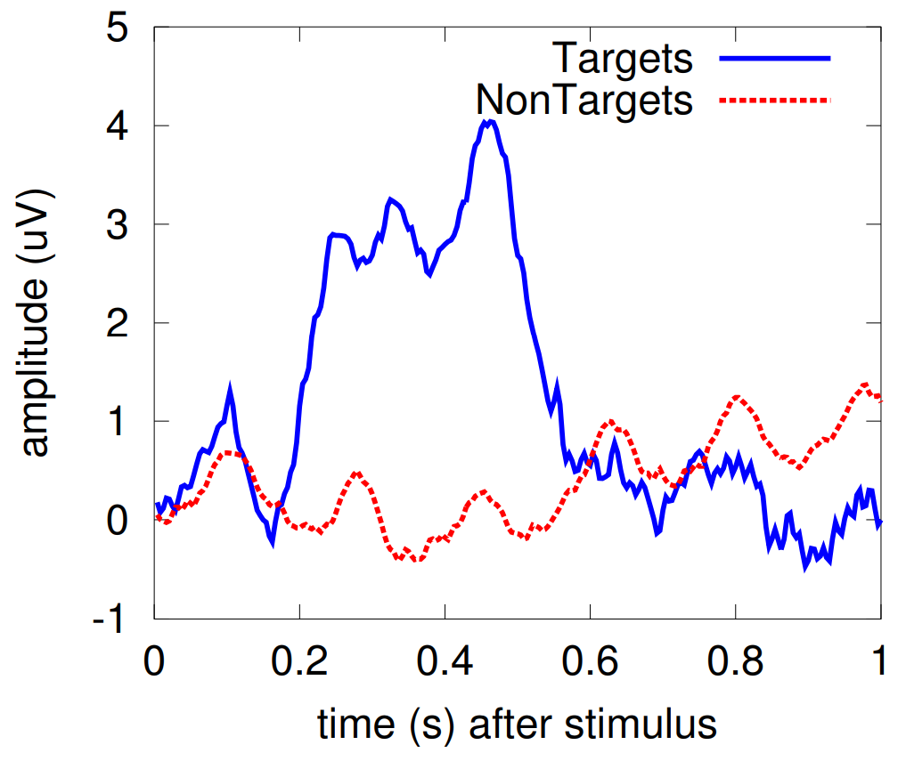
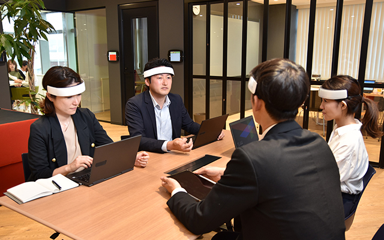

<!doctype html>
<html>
	<head>
		<meta charset="utf-8">
		<meta name="viewport" content="width=device-width, initial-scale=1.0, maximum-scale=1.0, user-scalable=no">

		<title>週間報告</title>

		<link rel="stylesheet" href="css/reset.css">
		<link rel="stylesheet" href="css/reveal.css">
		<link rel="stylesheet" href="css/theme/black.css">

		<!-- Theme used for syntax highlighting of code -->
		<link rel="stylesheet" href="lib/css/monokai.css">

		<!-- Printing and PDF exports -->
		<script>
			var link = document.createElement( 'link' );
			link.rel = 'stylesheet';
			link.type = 'text/css';
			link.href = window.location.search.match( /print-pdf/gi ) ? 'css/print/pdf.css' : 'css/print/paper.css';
			document.getElementsByTagName( 'head' )[0].appendChild( link );
		</script>

		<!--[if lt IE 9]>
		<script src="lib/js/html5shiv.js"></script>
		<![endif]-->
	</head>
	<body>
		<div class="reveal">
			<div class="slides">
				<section data-markdown=""
    					 data-separator="^\n---$"
						 data-separator-vertical="^\n>>>$">
						 <script type="text/template"> 
## 週間報告

***

<br><br>
<div style="text-align: right;">
	八木　仁
</div>

---

## 先週・今週やったこと
<br>

+ マトリックス状のLEDによる刺激の作成
+ 脳波成分の下調べ
+ 各種授業の課題

---

## マトリックス状の
## LEDによる刺激の作成

>>>



---

## BCI/BMIに使用する脳波成分

+ 脳波成分に着目したもの
+ 周波数成分に着目したもの
+ その他で気になったもの

---

## 脳波成分に着目したもの

>>>

### オドホール課題によるP300

+ 単一の試行では抽出が困難,加算平均が必須
+ 下記を使えば  単一試行でもOK
+ 主成分分析，独立成分分析,CSP
+ 聴覚,触覚,味覚,視覚,嗅覚

<br><br>

### 単なるイメージ

>>>

### オドホール課題によるP300とは？
以下のようなインターフェースを考える．



>>>

### 8が入力したいとすると...


>>>

### 85回加算平均したデータ


---

## 周波数成分に着目したもの

>>>

### アルファ波（阻止）を利用したもの

### 定常状態視覚誘発電位

### 運動関連同期（ERS）／脱同期（ERD）

---

## その他で気になったもの

>>>

##### RCE(Rhythmic Component Extraction)  

+ 特定周波数の脳波を分離する手法  
 <a href="https://ieeexplore.ieee.org/document/4517637" target="_blank">購入希望文献１</a>  
 <a href="https://ci.nii.ac.jp/naid/10026069420"  target="_blank">購入希望文献２</a>

>>>

## NIFSを用いたBCI

脳活動に関連する血流量変化を近赤外光を用いてモニタリング

<a href="https://neu-brains.co.jp/service/equipments/hot-2000/" target="_blank"></a>

<!--
---

## 今週読んだ本

 
-->
					</script>
				</section>
			</div>
		</div>

		<script src="js/reveal.js"></script>
		<script>
			// More info about config & dependencies:
			// - https://github.com/hakimel/reveal.js#configuration
			// - https://github.com/hakimel/reveal.js#dependencies
			Reveal.initialize({

				transition: 'convex', // none/fade/slide/convex/concave/zoom

				dependencies: [
					{ src: 'plugin/markdown/marked.js' },
					{ src: 'plugin/markdown/markdown.js' },
					{ src: 'plugin/notes/notes.js', async: true },
					{ src: 'plugin/highlight/highlight.js', async: true },
					{ src: 'plugin/search/search.js', async: true },
					{ src: 'plugin/zoom-js/zoom.js', async: true }
				],

				//width: 900,
				//height: 675,
				// Factor of the display size that should remain empty around the content
				margin: 0.1,
				
				// Bounds for smallest/largest possible scale to apply to content
				minScale: 0.2,
				maxScale: 1.5
			});
			Reveal.configure({ slideNumber: 'c/t' });
		</script>
	</body>
</html>
